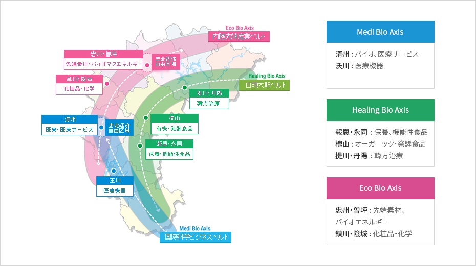

バイオ産業
- Home
- 主要産業
- バイオ産業
3ㆍ3ㆍ7バイオバレープロジェクト
忠清北道は世界3大バイオバレーを目指し、3本の発展軸・7大拠点地区を積極的に育成


- Medi Bio Axis
- 清州 ： バイオ、医療サービス
- 沃川 : 医療機器
- Healing Bio Axis
- 報恩・永同 ： 保養、機能性食品
- 槐山 ： オーガニック・発酵食品
- 提川・丹陽 ： 韓方治療
- Eco Bio Axis
- 忠州・曽坪 ：先端素材、バイオエネルギー
- 鎮川・陰城 ：化粧品・化学